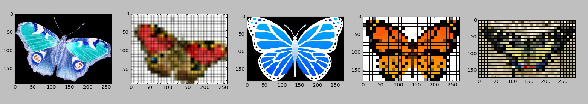

Today, we learned how to use MIT APP Inventor. Through many pains, aches and sorrows this app was finally created. It is called "Yap at Me". Might use this one in class!
We learned how to use Python. We created a story. It was a fantastic way to learn def and 'if' functions! It is called "LateNightFastFood".

This weekend I worked on revamping a game for the showcase Monday. I took an addition - subtraction game and made it into a multiplication / division game. It was kind of tricky because initially it the game was having you divide 7/5 and multiply 114 by 6 so I had to change parameters and add modulos. You can certainly learn a lot from doing this. I learned that %d and %s are placeholders in Python for an integer or string. It is called "Flashcard".

Graphics. Enjoy this team effort called "Butterflies".
Graphing, in a word, intriguing. Not as bad as I thought, lots of online code to manipulate.